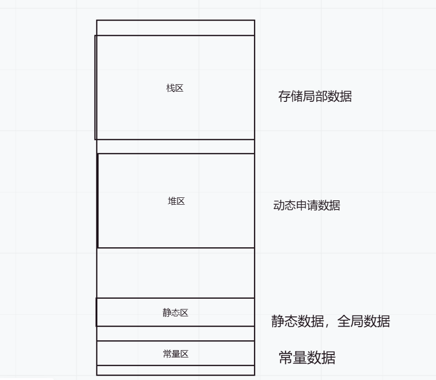

在一个程序的运行过程中，总是需要存储一些数据。这些数据可以粗略的被分为：
在c/c++中，内存可以分为四个区域：栈区、堆区、静态区和常量区。它们分别用于存储不同类型的数据，如下所示：
栈区：栈区是由编译器自动分配和释放的内存区域。它用于存储局部变量、函数参数和函数返回地址等。栈区是一个连续的内存块，它的大小是固定的。当程序执行离开一个函数时，栈中的内存就会被自动释放。为什么形参是实参的拷贝就与栈帧(栈帧也叫过程活动记录，是编译器用来实现过程/函数调用的一种数据结构。每一次函数的调用，都会在调用栈（call stack）上维护一个独立的栈帧（stack frame）。)有关，二者是通过栈帧与寄存器的一些操作来实现数据传输的。并且建立栈帧的主要目的就是存储局部的数据。
堆区：堆区是由程序员手动分配和释放的内存区域。它用于存储动态分配的对象，如new操作符创建的对象。堆区是一个不连续的内存块，它的大小可以动态地调整。因此，堆区的内存容量比栈区大得多。程序员需要手动释放堆区中的内存，否则就会出现内存泄漏的问题。
静态区：静态区是用于存储全局变量和静态变量的内存区域。它在程序启动时被分配，直到程序结束才被释放。静态区也是一个连续的内存块，它的大小是固定的。
常量区：常量区是用于存储常量数据的内存区域。它包括字符串常量和其他类型的常量数据。常量区是一个不连续的内存块，它的大小固定不变。程序员不能修改常量区中的数据。
这些都是需要重点掌握的知识。
以一道题来巩固下知识：
int a=1;
static int b=1;
int main(){
static int c=1;
int d=1;
int e[10]={0};
char f[3]="abc";
const char* g="abcd";
int* p1=(int*)malloc(sizeof(int)*4);
}
分别指出以上8个变量所存储的内存位置。
a：全局变量存储在静态区。
b：静态变量存储在静态区。
c：c也是存储在静态区。
d：d是一个局部变量只在main内可用，所以存储在栈区。
e：数组存储在栈区。
f：同上。
g：g是指向常量区的一个指针，但本身仍然存储在栈区内。
p1：p1是指向堆区的一个指针，但本身仍然存储在栈区内。
*p1： 对p1解引用，那么就是在堆区内。
*g1： 同理，解引用后在常量区。
c语言里的内存分配函数如malloc，calloc等都可以在c++中使用，且可以满足大部分的功能，那为何c++要自行开发自己的动态内存管理方式呢？
在c中，内存管理主要是通过malloc和free函数进行的，这种方式对于简单程序来说非常有效。但是，在c++中，对象的构造和析构需要进行特殊的处理，而c中的内存管理方式无法满足这些要求。
因此，c++引入了new和delete运算符，这些运算符可以执行对象的构造和析构。
int* p=new int;
上述的代码段就完成了动态申请一个int类型的空间。还可以扩展如下的写法：
int* p1=new int(10); //动态申请一个int空间且初始化为10。
int* p2=new int[4]; //动态申请4个int类型的空间。
int* p3=new int[4]{1,2,3,4}; //动态申请4个int类型空间其初始化为1,2,3,4
不过在使用完后记得使用delete将其销毁。
delete p;
delete p1;
相同点在于malloc与new都是从堆上去申请空间，且完成其使命后都要手动销毁，否则可能造成内存泄漏。
而不同点就比较多了。
第一，malloc无法完成初始化，这也是c++要使用新的内存管理方式的重要原因。
例如在写栈的函数时，使用malloc就只能完成申请空间的功能，而new可以在申请空间后调用构造函数对对象进行初始化。
第二，同上，free也只是完成空间的释放，而不会像delete一样会调用析构函数。
第三，new的抛出异常机制更适合在c++中使用，而malloc在空间申请失败时返回的是NULL。
第四，malloc与free是函数，而new和delete则是被定义为操作符。
既然讲到就简单谈谈内存泄漏。
内存泄漏，就是在应用程序分配某段内存后，因为某些失误，失去了对该段内存的控制，造成内存的浪费。如果内存不断的泄漏，那么由于其导致的响应速度会越来越慢，最终可能会造成崩溃。
也许有的人会有疑惑，为何自己在写动态分配内存时，有时候会忘记free或者delete，但好像也没什么事。这是因为现阶段我们写的代码都是在编译器上完成的，当程序停止，所有被用到的内存也都被释放了，包括我们失去控制的那段内存。但服务器就不一样了，例如游戏的服务器，是不能随意开关机的，那么如果有内存泄漏，势必会让服务器内存越来越慢，从而导致运行变慢，最终崩溃。
再说说new和delete，二者在底层的实现上都用到了malloc和free，只是除此之外调用了析构和构造而已。
new和delete是用户进行动态内存申请和释放的操作符，operator new 和operator delete是
系统提供的全局函数，new在底层调用operator new全局函数来申请空间，delete在底层通过
operator delete全局函数来释放空间。
/*
operator new：该函数实际通过malloc来申请空间，当malloc申请空间成功时直接返回；申请空间
失败，尝试执行空 间不足应对措施，如果改应对措施用户设置了，则继续申请，否
则抛异常。
*/
void *__CRTDECL operator new(size_t size) _THROW1(_STD bad_alloc)
{
// try to allocate size bytes
void *p;
while ((p = malloc(size)) == 0)
if (_callnewh(size) == 0)
{
// report no memory
// 如果申请内存失败了，这里会抛出bad_alloc 类型异常
static const std::bad_alloc nomem;
_RAISE(nomem);
}
return (p);
}
/*
operator delete: 该函数最终是通过free来释放空间的
*/
void operator delete(void *pUserData)
{
_CrtMemBlockHeader * pHead;
RTCCALLBACK(_RTC_Free_hook, (pUserData, 0));
if (pUserData == NULL)
return;
_mlock(_HEAP_LOCK); /* block other threads */
__TRY
/* get a pointer to memory block header */
pHead = pHdr(pUserData);
/* verify block type */
_ASSERTE(_BLOCK_TYPE_IS_VALID(pHead->nBlockUse));
_free_dbg( pUserData, pHead->nBlockUse );
__FINALLY
_munlock(_HEAP_LOCK); /* release other threads */
__END_TRY_FINALLY
return;
}
/*
free的实现
*/
#define free(p) _free_dbg(p, _NORMAL_BLOCK)
通过上述两个全局函数的实现知道，operator new 实际也是通过malloc来申请空间，如果
malloc申请空间成功就直接返回，否则执行用户提供的空间不足应对措施，如果用户提供该措施就继续申请，否则就抛异常。operator delete 最终是通过free来释放空间的。
new等于开空间加调用构造函数。
delete等于调用析构函数加释放空间。
例如我们new了一个stack类：
class stack{
int* arr;
int capacity;
int size;
}
stack *p=new stack;
开空间就是在堆上为其开辟了指定的一块stack大小的空间。这点和malloc是一致的。而调用构造函数就是malloc无法办到的事情了，如果我们为stack类写了一个无参构造，那么此时申请完空间就会去调用无参构造，为stack类里的arr申请一块空间。
同样的，free也无法调用析构函数，并且delete里析构执行顺序先于free！
free能办到什么事呢？有这样一个有趣的比喻，你是一个需要水桶的人，管理水桶的我们暂且称为管家，malloc就是你对管家说：请给我xx个水桶，而free就是你对管家说：这xx个我用完了，还给你。而是否桶里的水有没有用完，管家也不会去处理。c语言程序中，在free后将指针指向NULL，也不过是提醒自己：这些水桶不再属于我了，我不能再往里面进行操作了。如果你free了还要执意使用水桶，别人拿去装饮料，你却往里面撒尿，这样做肯定会引起管家的不满啦！
总之free后你仍然可以使用这个指针，但操作系统认为这块内存已经还给了他，他会毫不犹豫的分配给其他程序，当你下一次在使用时就会有内容改变的风险！
所以free一个stack只是将arr，size，capacity从堆区中抹掉了，而arr指向的那块空间是free无法染指的，也就是桶里的水还在，这需要我们手动的去写析构函数才行。
C++中，delete和delete[]都是用来释放动态分配的内存的关键字，但是它们的使用方式和释放的内存类型有所不同。
delete用于释放单个对象所占用的内存，即释放使用new关键字动态分配的单个对象的内存。当我们使用new来分配一个单个对象的内存时，需要使用delete来释放这个对象的内存。
例如：
int* p = new int;
delete p;
delete[]用于释放数组对象所占用的内存，即释放使用new[]关键字动态分配的数组对象的内存。当我们使用new[]来分配一个数组对象的内存时，需要使用delete[]来释放这个数组对象的内存。
例如：
int* p = new int[10];
delete[] p;
需要注意，如果我们使用delete来释放使用new[]关键字动态分配的数组对象的内存，或者使用delete[]来释放使用new关键字动态分配的单个对象的内存，都会导致未定义的行为，可能会出现内存泄漏或其他错误。因此，在使用动态内存分配时，需要根据对象类型选择合适的释放方式，以避免出现内存错误。